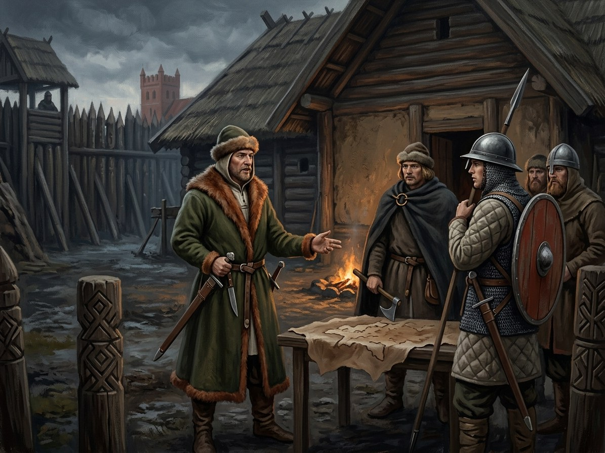

Algirdaičiai (Algirdas’s line)¶
Overview¶
[Historical record] The sons of Algirdas (d. May 1377) and Uliana of Tver: Jogaila, Skirgaila, Kaributas, Lengvenis, Karigaila, Vygantas and Švitrigaila. They hold Vilnius and the eastern appanages. Jogaila signed Dovydiškės (31 May 1380), retook Vilnius on 12 Jun 1382 and was baptised at Kraków in 1386 as King of Poland. Skirgaila governed Lithuania for him (1387-92) and died at Kyiv on 11 Jan 1397. Švitrigaila ruled 1430-32 and died in 1452. Jogaila’s Jagiellonian sons, Władysław III and Casimir, carry the line into the next century.
Algirdaičiai (Algirdas’s line)

Algirdaičiai (Algirdas’s line) · faction¶
Tipas |
grupuotė |
Pastaba |
Dynastic branch of Grand Duke Algirdas: Jogaila, Skirgaila, Švitrigaila, and their heirs. |
Wants (by book)¶
Book |
Goal |
Leverage |
Red line |
|---|---|---|---|
I |
Remove Kęstutis; trade baptism for a crown |
Hanulas, the Order’s alliance |
Kęstutis alive at Krėva |
II |
Hold Lithuania through Skirgaila; keep Vytautas small |
Trakai; Henė’s bargains |
Vytautas on the throne |
III |
Vilnius-Radom |
Jogaila’s Polish crown |
A Kęstutaitis kingdom |
IV |
Heirs, and no Lithuanian crown |
Sophia’s sons (b. 1424, 1427) |
Vytautas’s crown |
V |
Švitrigaila claims Lithuania alone; Casimir recovers it |
The Orthodox princes; the council in 1440 |
Lithuania as a separate kingdom |
Patron Force¶
[The saga’s invention] The Shadow-Seller: Jogaila’s 1382 bargain gives his line the crown and loses the land, and the three stones tie the cousins to it (Henė’s stones). The White Silence feeds on them from 1382.
Internal tensions¶
Uliana’s sons against Maria’s elder sons (the Orthodox Andrius and Dmitrijus, who die with Vytautas at the Vorskla). Skirgaila against Vytautas over Trakai. Švitrigaila against Jogaila, imprisoned at Kremenets 1409-18. Feud with the Kęstutaičiai runs from Krėva (15 Aug 1382) to the murder of Žygimantas (20 Mar 1440).
Notable members¶
Algirdas, Jogaila, Skirgaila, Švitrigaila.
Ryšiai
Feeds: Baltoji Tyla (White Silence) (1382–…)
Feud with: Kęstutaičiai (Kęstutis’s line) (1380–1392) — Jogaila and Skirgaila against Kęstutis and Vytautas. · Kęstutaičiai (Kęstutis’s line) (1432–1440) — Švitrigaila against Žygimantas.
Member of: Gediminaičiai (House of Gediminas) — Branch: Algirdas and his sons. · Grand Duchy of Lithuania
Members: Algirdas · Jogaila · Jogailaičiai (Jagiellonians) — Uliana’s line: Jogaila and his heirs. · Karigaila (Jogaila’s brother) · Skirgaila · Uliana of Tver (Julijona Tverietė), Algirdas’s second wife · Čartoriskiai (Czartoryski) — Descent from Konstantinas, a son of Algirdas’s first marriage. · Švitrigaila
Sąsajos¶
graph LR
algirdaiciai["Algirdaičiai (Algirdas's line)"]
algirdas["Algirdas"]
czartoriskiai["Čartoriskiai (Czartoryski)"]
gdl["Grand Duchy of Lithuania"]
gediminaiciai["Gediminaičiai (House of Gediminas)"]
jogaila["Jogaila"]
jogailaiciai["Jogailaičiai (Jagiellonians)"]
karigaila["Karigaila (Jogaila's brother)"]
kestutaiciai["Kęstutaičiai (Kęstutis's line)"]
skirgaila["Skirgaila"]
svitrigaila["Švitrigaila"]
uliana_tver["Uliana of Tver (Julijona Tverietė), Algirdas's second wife"]
white_silence["Baltoji Tyla (White Silence)"]
algirdaiciai -->|Member of| gdl
algirdaiciai -->|Member of| gediminaiciai
algirdas -->|Member of| algirdaiciai
jogaila -->|Member of| algirdaiciai
skirgaila -->|Member of| algirdaiciai
svitrigaila -->|Member of| algirdaiciai
white_silence -->|Fed by| algirdaiciai
jogailaiciai -->|Member of| algirdaiciai
czartoriskiai -->|Member of| algirdaiciai
kestutaiciai -->|Feud with| algirdaiciai
kestutaiciai -->|Feud with| algirdaiciai
karigaila -->|Member of| algirdaiciai
uliana_tver -->|Member of| algirdaiciai
style algirdaiciai stroke-width:3px